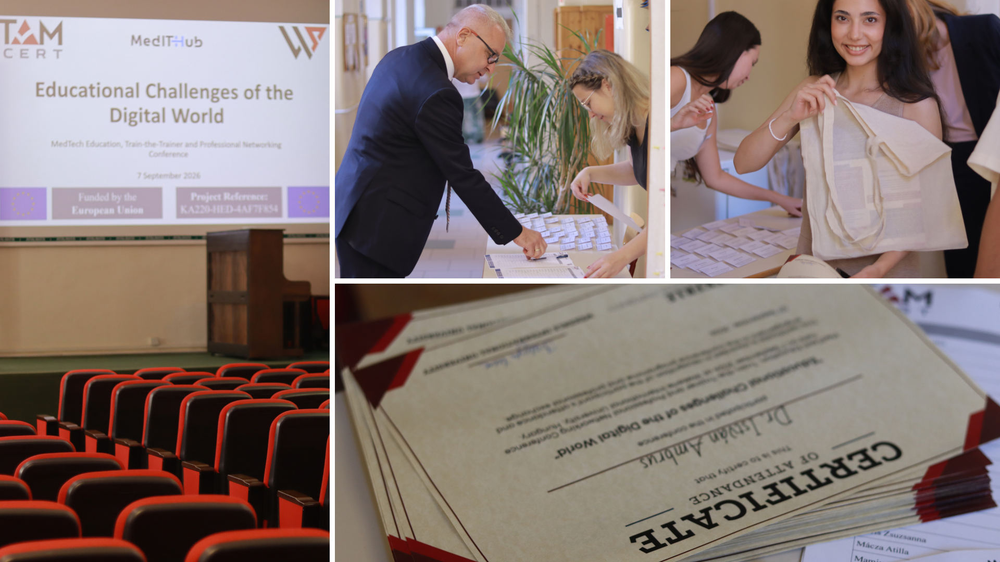
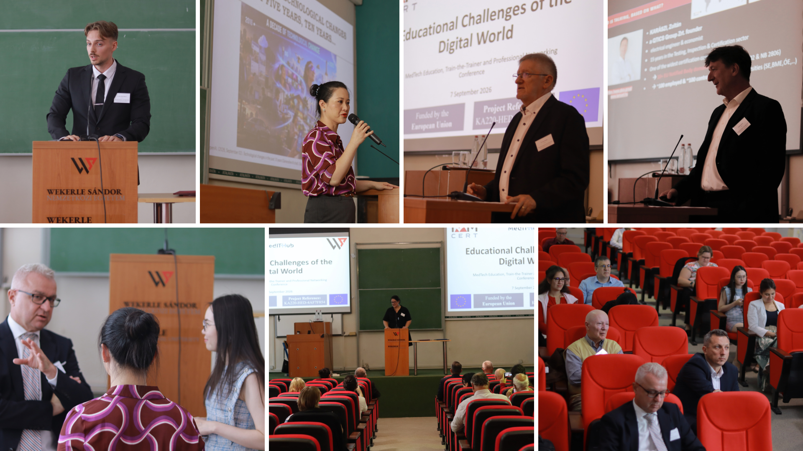
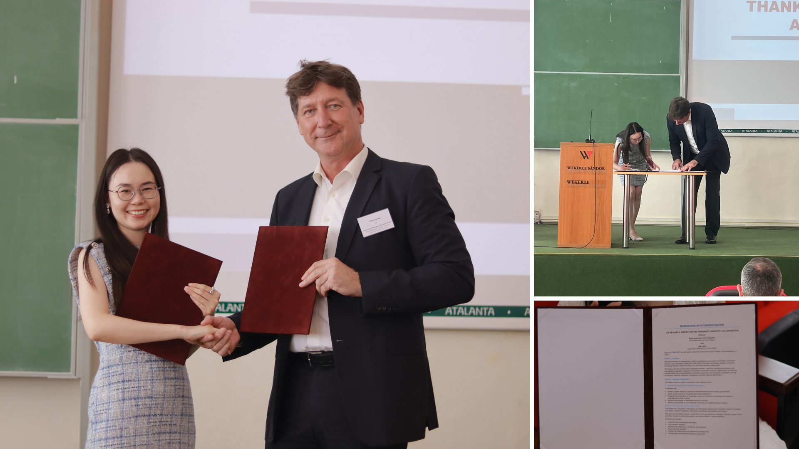
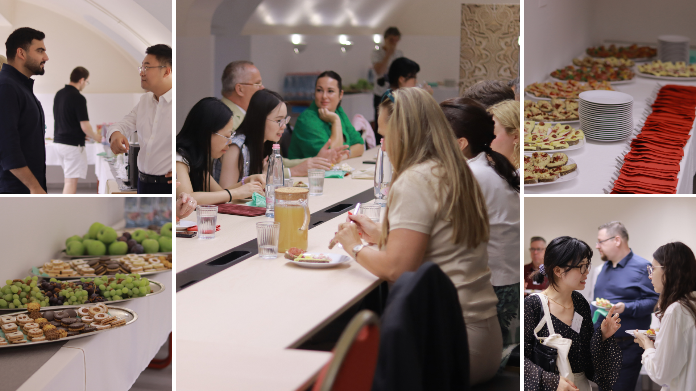

25 September 2026
From the Big Picture to Practice
Artificial intelligence and digital transformation are changing not only the technologies we use, but also the way we teach, learn, work and build trust in innovation. The plenary and English-language face-to-face sessions of the Train-the-Trainer event approached these changes from complementary perspectives, moving from broader questions of human responsibility and organisational readiness to concrete applications in higher education, MedTech and digital learning.

Setting the Broader Framework: The Plenary Session
The plenary session featured three invited presentations addressing the broader challenges of artificial intelligence, digital transformation, education and trust.
Prof. Dr. László Vasa of Széchenyi István University presented “New World, New Challenges.” His contribution placed AI within a much broader societal and institutional context, arguing that the central issue is not simply technological adaptation, but the preservation of human agency, responsibility, resilience and moral judgement. He emphasized that AI should remain a tool under human control, while universities must increasingly function as strategic institutions that develop not only knowledge, but also digital competence, ethics, cooperation and resilience.
A particularly important part of his presentation concerned higher education. Prof. Vasa described a shift from a traditional teacher–student relationship toward a teacher–AI agent–student learning triangle, which has consequences for methodology, assessment and trust. He also warned against the “shortcut problem,” where AI can make task completion easier while reducing the productive struggle through which genuine competence is built. At the same time, he highlighted the opportunities of AI for personalized learning, simulation, faculty support and AI fluency across disciplines.
Dr. Aisi Li of Wekerle International University presented “Learning to Transform: An Educational Perspective on Organisational Readiness for AI and Digitalisation.” Her presentation approached digital transformation primarily as a human learning process rather than as a matter of technology acquisition alone. She argued that successful transformation depends on whether people are given purpose, agency, time, support and opportunities for reflection, and whether organisations are prepared to learn together with their staff instead of simply expecting individuals to adapt on their own.

Her presentation considered the expectations placed on learners, educators and leaders and showed how these expectations are interconnected. Particular attention was given to the gap between organisational expectations and actual readiness, including time, specialist knowledge, financial resources, staff development and coordinated decision-making. The presentation also emphasized reflective practice, alignment and train-the-trainer approaches as important mechanisms for building long-term organisational capacity.
Dr. Ákos Ádám Molnár of TAMCert presented “The Role of Compliance in Building a Safer Future.” His contribution focused on the relationship between innovation, regulation, standards, conformity assessment and trust. He explained that regulation defines what must be achieved, standards provide a practical framework for how this can be achieved, and conformity assessment provides evidence that the required conditions have been met.
The presentation also addressed the increasing importance of compliance in AI-enabled and digital environments, where safety must be understood more broadly to include cybersecurity, data protection, AI governance, transparency and human oversight. In the context of digital health and MedTech, Dr. Molnár stressed that technological performance alone is insufficient; responsible innovation also depends on regulatory compliance, privacy, cybersecurity, clinical performance and trustworthy governance. His concluding message was that compliance should not be viewed as a barrier to innovation, but as a condition for making innovation safe enough to trust.
Together, the three plenary presentations established a broad conceptual framework for the event: technological change needs to be accompanied by human responsibility, institutional learning and appropriate systems of governance and trust.
From Principles to Educational Practice
The English face-to-face session, chaired by Prof. Dr. Andrea Bencsik of Wekerle International University, continued the discussion through concrete examples from MedTech education, higher education, digital transformation and artificial intelligence.
Dr. Fanni Zsarnóczky-Dulházi of Quant Holding Zrt. presented “From Houston to the Mátra: Implementing Texas Medical Center Accelerator Experience in a Hungarian MedTech Living Lab and Train-the-Trainer Programme.” Her presentation described how experience from international healthcare and accelerator environments, including the Texas Medical Center, has been transferred into the Mátra Home Care Living Lab in Hungary. Particular attention was given to the combination of real-world MedTech validation, regulatory awareness and trainer development.
Gerald Korir of the Budapest University of Technology and Economics presented “A Process-Oriented Model for Quality and Digital Transformation in Higher Education.” He introduced a framework connecting process management, quality assurance and digital transformation, emphasizing that quality management should support continuous institutional learning and improvement rather than function merely as a compliance exercise.
Nikita Kalganov of Obuda University presented “LLM-based Agent Predicting Exchange Rate Fluctuations to Advise International Students of Tuition Fee Payment Date.” His contribution introduced a prototype AI-supported system designed to help international students identify potentially more favourable dates for tuition-fee payments by combining exchange-rate data, forecasting and an LLM-based advisory layer.
Sára Szatmáry of Obuda University presented “Beyond E-Learning: Matching Learning Outcomes to Digital and Experiential Formats.” Her presentation focused on the importance of choosing learning formats according to the competencies being developed, with digital formats supporting knowledge acquisition and preparation, while face-to-face settings remain particularly valuable for interaction, collaboration, professional judgement and experiential learning.
Prof. Dr. Kornélia Lazányi of Wekerle International University and TAMCert presented “AI and the Promise of Frictionless Working.” She examined whether making learning and work increasingly effortless through AI is always beneficial, drawing attention to the importance of productive difficulty, active engagement, autonomy, mastery and intellectual ownership in the learning process.
Azar Mamiyev of Obuda University presented “Cost as an Unmonitored Security Signal: Economic Denial of Sustainability Attacks Against Fixed-Budget Cloud Learning Platforms.” His presentation focused on a form of cloud-security risk in which attackers can increase operating costs without disrupting service availability. He argued that financial cost should be treated as a security signal and proposed a Cloud Financial Security framework for better monitoring and protection of fixed-budget educational platforms.
The presentations generated an active discussion. Presenters who were able to keep within their allocated time received questions from the audience, and the exchanges covered both the specific research topics and their wider educational and practical implications. The level of engagement was particularly evident at the end of the session, when the discussion continued well into the coffee break, giving presenters and participants additional opportunity to exchange ideas in a more informal setting.

Cooperation Beyond the Conference
The plenary programme also included the signing of a Memorandum of Understanding between Slugu Innovation Consulting Kft. and TAM CERT. The agreement establishes a framework for strategic cooperation in scientific research, innovation, technology transfer, research funding, and university–industry collaboration. It also provides a basis for developing an international research and innovation network, supporting joint projects, professional and academic exchanges, conferences, expert activities, and cross-border research and innovation cooperation.

Across the plenary and face-to-face sessions, a common picture emerged: responsible technological development requires more than technological capability. Human engagement, organisational learning, educational quality, regulatory awareness and trust all remain central as artificial intelligence and digitalisation become increasingly integrated into higher education and professional training.
To be continued…
Our Train-the-Trainer event report continues in the next part of the series, where we explore further sessions and discussions – from AI and cybersecurity to learning analytics and immersive technologies.
The views and opinions expressed are those of the author(s) and do not necessarily reflect those of the European Union or the Tempus Public Foundation. Neither the European Union nor the granting authority can be held responsible for them.